Lviv University
Why?
Sharing types
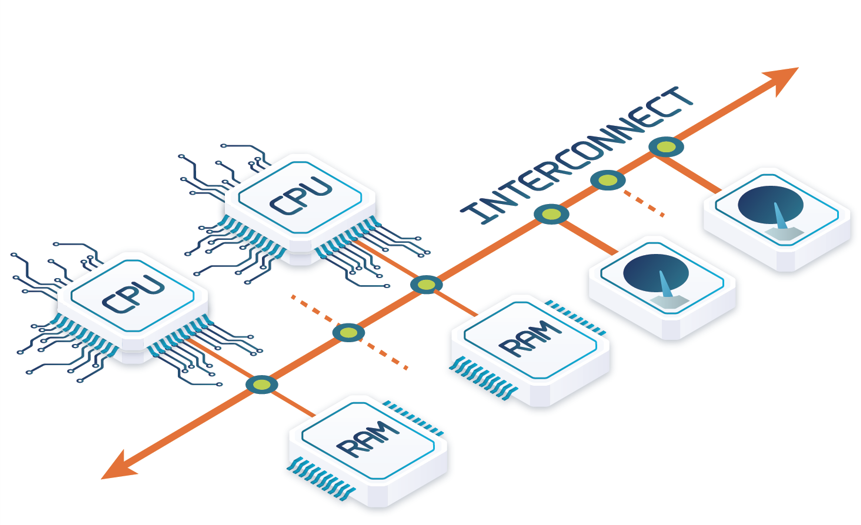
Uniform Memory Access
Non-Uniform Memory access
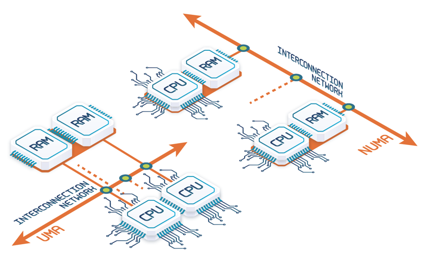
Pros
Cons
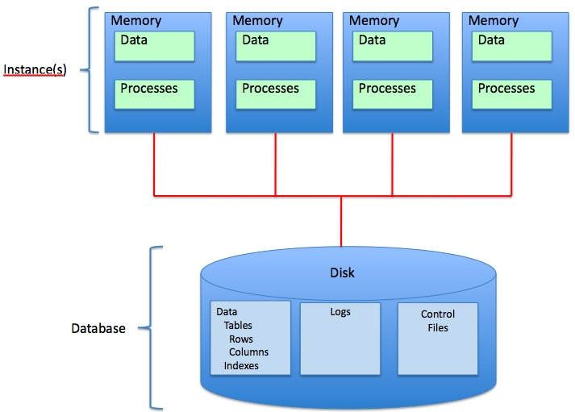
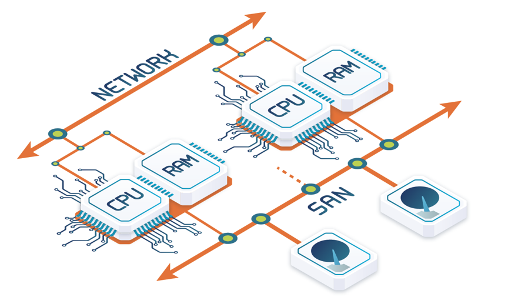
Pros
Cons
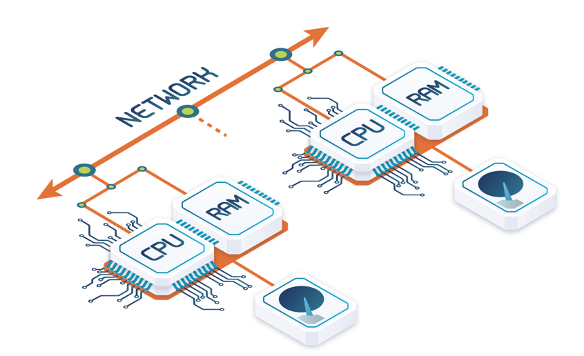
| Type | Shared nothing | Shared memory | Shared disk |
|---|---|---|---|
| Concurrency | 2 | 2 | 3 |
| Crash recovery | 2 | 1 | 3 |
| DB design | 3 | 2 | 2 |
| Load balancing | 3 | 1 | 2 |
| High availability | 1 | 3 | 2 |
| Message count | 3 | 1 | 2 |
| Bandwidth | 1 | 3 | 2 |
| Scaling | 1 | 3 | 2 |
| Large distances | 1 | 3 | 2 |
| Critical sections | 1 | 3 | 2 |
| Image count | 3 | 1 | 3 |
| Hot spots | 3 | 3 | 3 |
Distribution
There are two common ways data is distributed across multiple nodes:
Both methods provide:
Why?
Assumption
Dataset is small enough so that it can fit on one machine.
S3 example
Types:
S3 Replication Time Control (S3 RTC): replicates 99.99 percent of new objects stored in Amazon S3 within 15 minutes (backed by a service-level agreement).
How to handle changes?
Three algorithms:
Single-leader replication flow
Leader replication
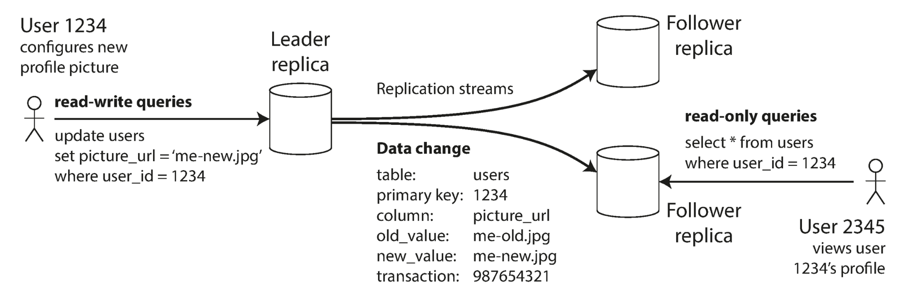
Single-leader replication users
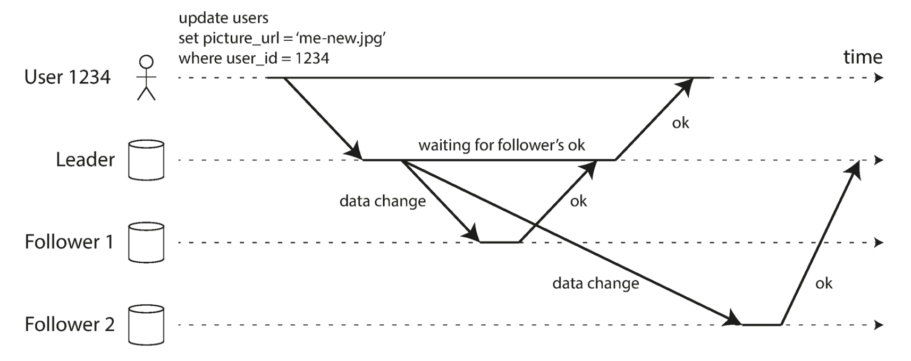
Leader-based replication with one synchronous and one asynchronous follower
Synchronous vs asynchronous
Synchronous replication pros and cons:
Pros: follower is guaranteed to have an up-to-date copy of the data that is consistent with the leader.
Cons: if the synchronous follower doesn’t respond (for whatever reason), the write cannot be processed.
The leader must block all writes and wait until the synchronous replica is available.
Semi-synchronous replication
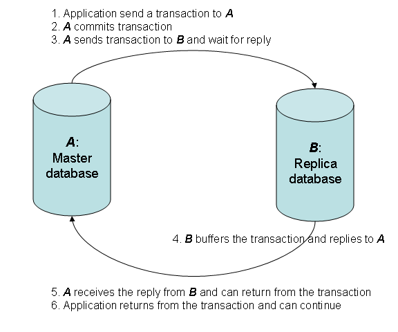
Google MySQL semi-sync
Chain replication
Chain replication is a special primary backup system, in which the servers are linearly ordered to form a chain with the primary at the end.
The goal: “to achieve high throughput and availability without sacrificing strong consistency”.
Chain replication protocol
Chain replication protocol
The chain replication protocol considers only three failure cases, all of which are fail-stop failures:
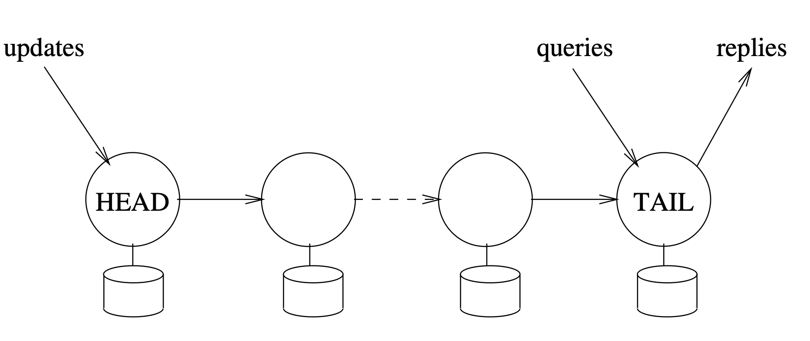
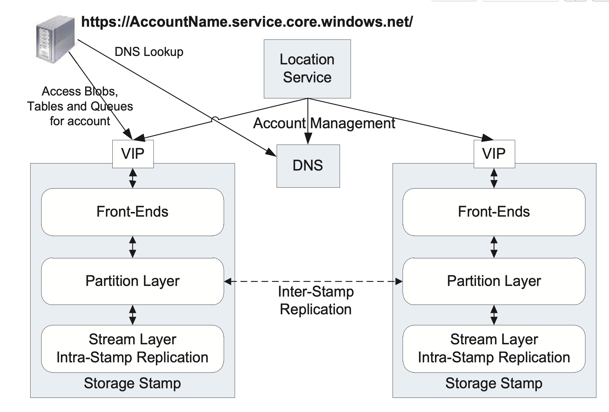
Azure Storage architecture
Problem: how to add a new follower?
Simple copy is not enough, because:
Adding a follower
Replication log position
Follower failure: catch-up recovery
Leader failure: failover
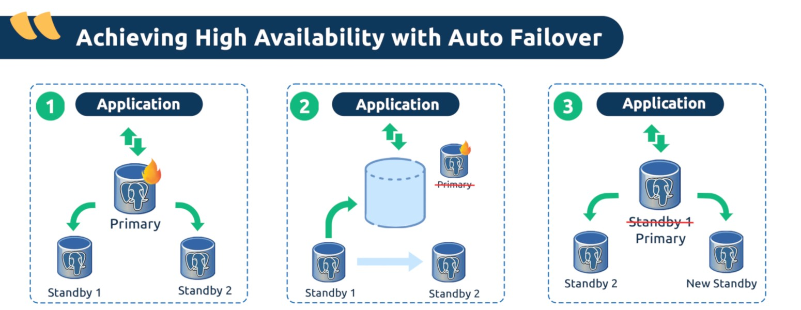
PostgreSQL example
Failover: what can go wrong
Statement-based
Log each write request (statement) and send it to followers.
Possible issues:
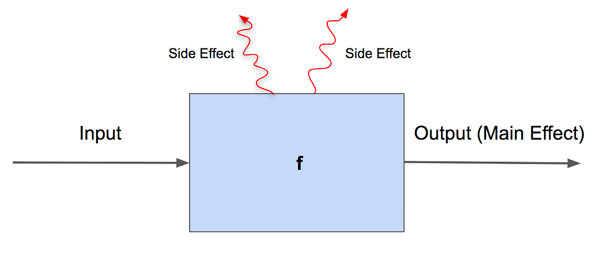
Write-ahead log shipping
For log-structured storage: log already is the main place of storage.
For B-trees: use write-ahead log.
Possible issues:
Logical (row-based) log replication
A logical log for a relational database is usually a sequence of records describing writes to database tables at the granularity of a row:
Replication lag: consistency
Client-side consistency has to do with how and when observers see updates made to a data object in the storage systems.
Types:
Replication lag: eventual consistency types
Types:
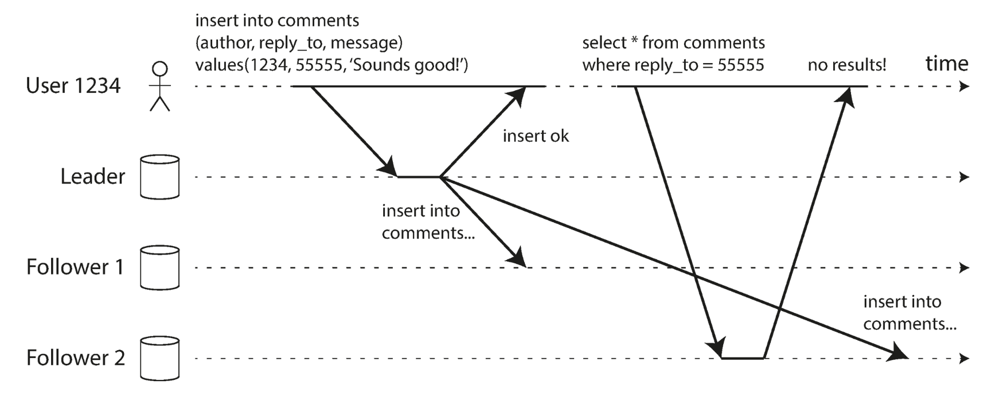
Read-after-write consistency
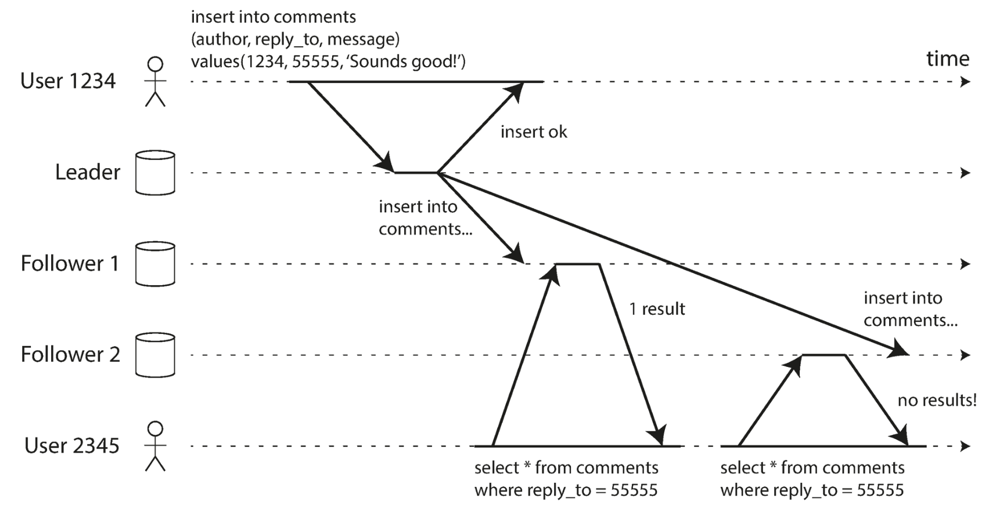
Monotonic read consistency
Multi-leader replication
Advantages:
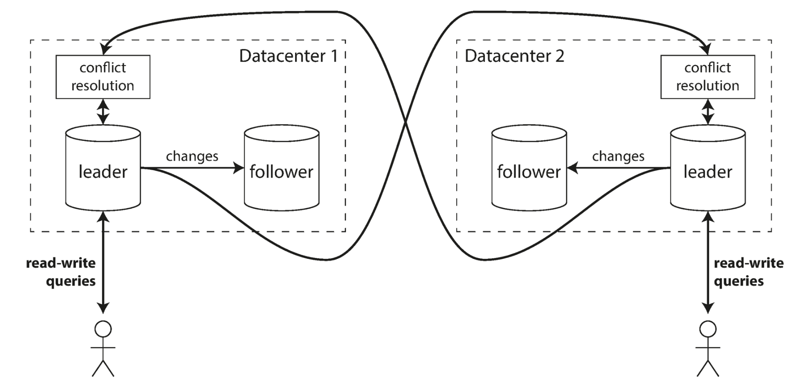
Multi-leader replication
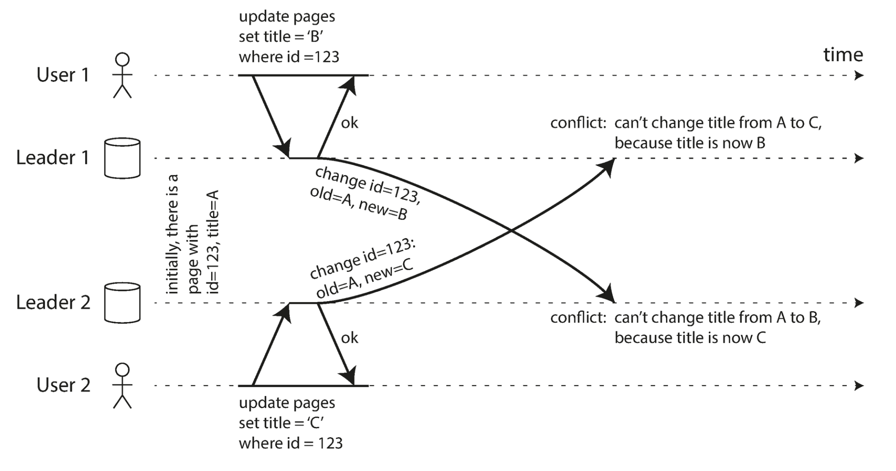
Multi-leader write conflict
Convergent conflict resolution
Automatic conflict resolution
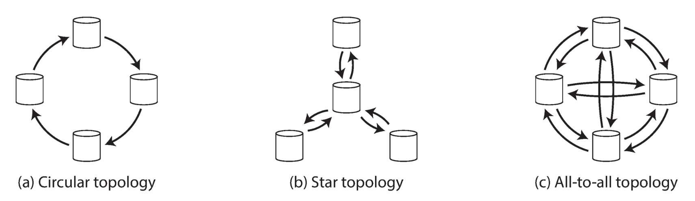
Multi-leader topologies
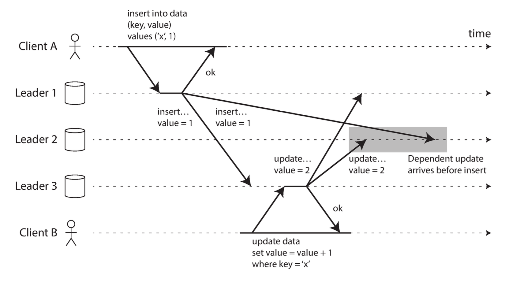
Multi-leader overtake
Leaderless replication
Clients:
Examples:
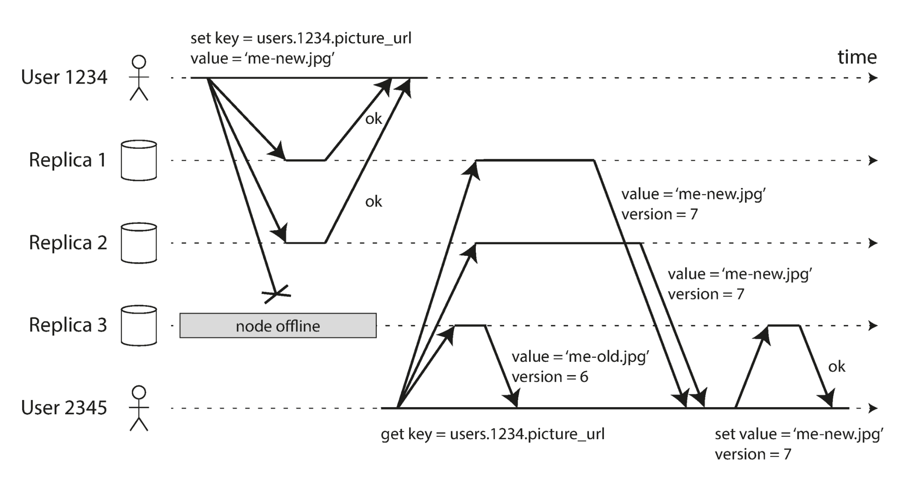
Quorum write/read and node repair after outage
Quorum
If there are \(n\) replicas, every write must be confirmed by \(w\) nodes to be considered successful, and we must query at least \(r\) nodes for each read.
As long as \(w + r > n\), we expect to get an up-to-date value when reading, because at least one of the \(r\) nodes we’re reading from must be up to date.
Reads and writes that obey these \(r\) and \(w\) values are called quorum reads and writes.
One can think of \(r\) and \(w\) as the minimum number of votes required for the read or write to be valid.
Quorum: tolerating unavailable nodes
\(w + r > n\) is called a quorum condition.
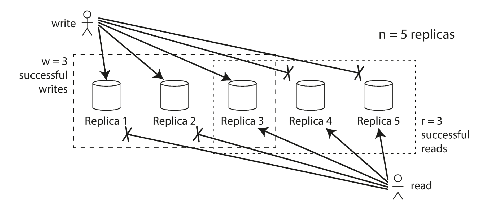
Quorum write/read and node repair after outage
Definition
Partitioning is a way of intentionally breaking a large database down into smaller ones. Also called sharding.
Partitions are defined in such a way that each piece of data belongs to exactly one partition.
Why partitions?
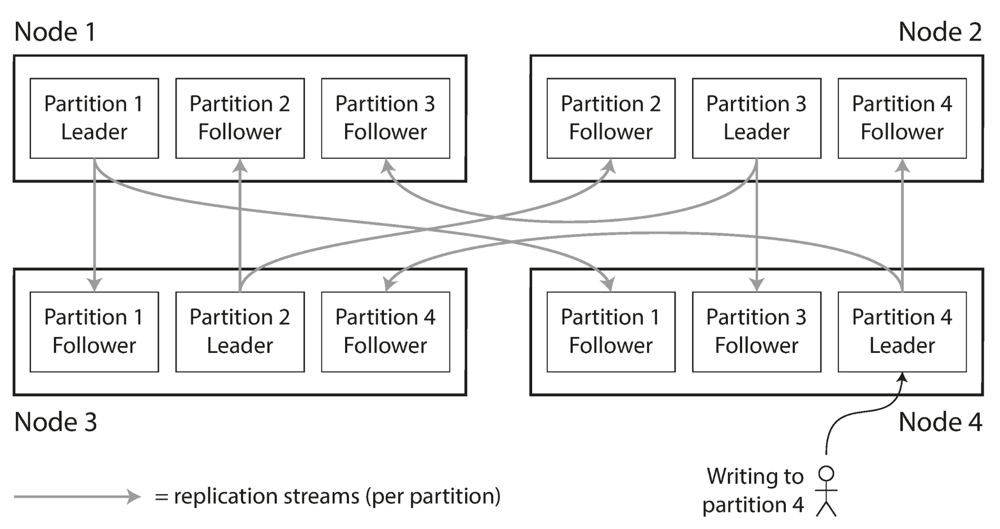
Leader-follower replication + partitioning
Goal
Even distribution of load.
Unfair partitioning is called skewed.
Partition with disproportionately high load - hot spot.
How to solve
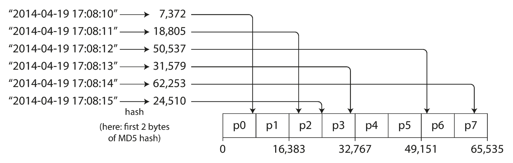
Hashes pros and cons
Solution
Compound primary key: hash the first key column only, use the rest as the concatenated index (e.g. Cassandra).
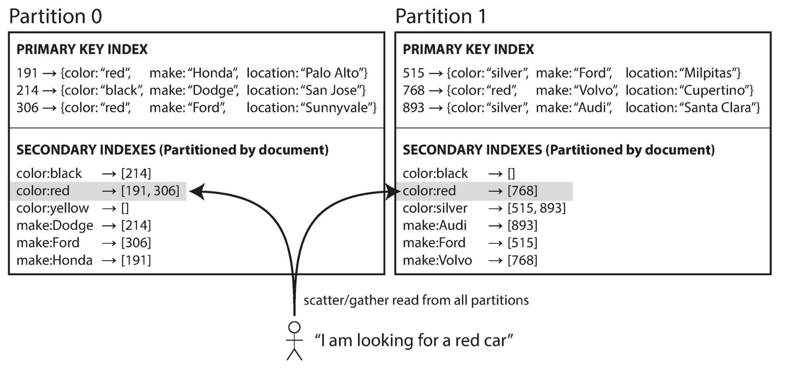
Partitioning secondary indexes: scatter-gather approach (local index)
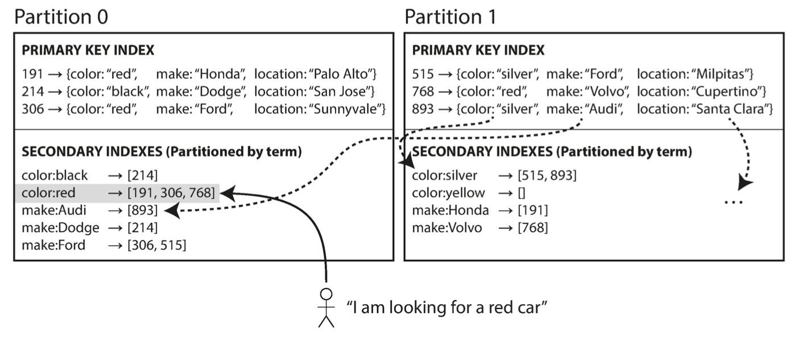
Partitioning secondary indexes: by-term approach (global index)
Global (term-partitioned)
Local (document-partitioned)
Rebalancing
Rebalancing strategies
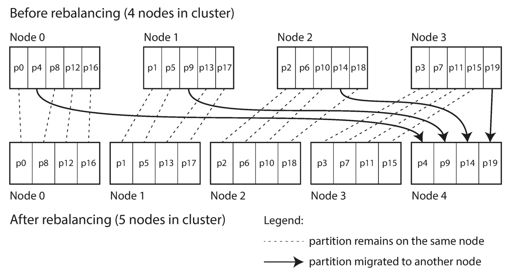
Request routing
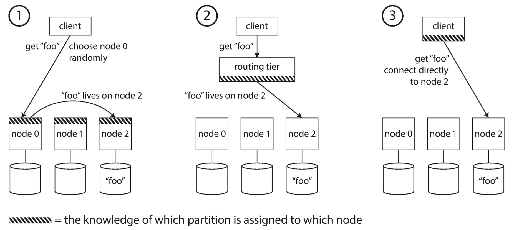